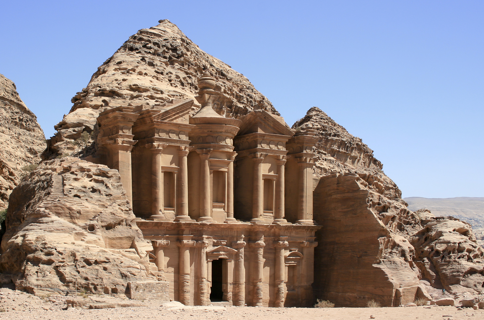

MARAVILLAS DEL MUNDO


A lo largo de la historia, el ser humano ha ido construyendo una serie de estructuras de diferentes dimensiones, épocas, características... Algunas de ellas son un completo misterio ya sea en lo relacionado a las técnicas utilizadas en su construcción, en su significado o incluso en su propósito. De entre todas ellas hay algunas que han destacado por su laboriosidad y se las ha clasificado como maravillas del mundo moderno. | ||||
|---|---|---|---|---|
| ||||
|
De iquierda a derecha:Chichén Itzá (México), Machu Picchu (Perú), estatua del Cristo Redentor (Brasil), Coliseo romano (Italia), Taj Mahal (India) y la Gran Muralla (China). | ||||
¿Qué tienen en común? | ||||
Se denominan las nuevas siete maravillas del mundo moderno a los monumentos que resultaron los ganadores en un concurso público e internacional celebrado en 2007, inspirado en la lista de las siete maravillas del mundo antiguo y realizado por una empresa privada de nombre New Open World Corporation. Más de cien millones de votaciones, a través de Internet y SMS, dieron como resultado esta nueva clasificación. La iniciativa partió del empresario suizo Bernard Weber, fundador de la empresa. | ||||
Finalistas | ||||
Ganaron 7 monumentos, pero hubieron otros 68 finalistas | ||||
|

|
| |||

| | ||||
|---|---|---|---|---|

|

|

| ||
Maravillas del mundo | ||||